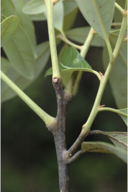
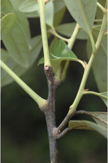
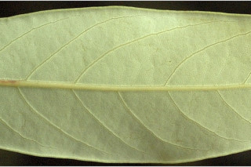
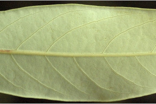

Trees up to 8 m tall.
8 ಮೀ. ಎತ್ತರದವರೆಗಿನ ಮರಗಳು.
Trees up to 8 m tall.
மரங்கள் 8 மீ. உயரம் வரை வளரக்கூடியது.
Bark smooth
ತೊಗಟೆ ನಯವಾಗಿರುತ್ತದೆ.
Bark smooth
மரத்தின் பட்டை வழுவழுப்பானது.
Branchlets subterete, toemntose, glabrous when mature.
ಎಳೆಯ ಕಿರುಕೊಂಬೆಗಳು ಉಪದುಂಡಾಗಿದ್ದು, ದಟ್ಟ ಮೃದು ತುಪ್ಪಳ ಸಹಿತವಾಗಿರುತ್ತವೆ, ಬಲಿತಾಗ ರೋಮರಹಿತವಾಗಿರುತ್ತವೆ.
Branchlets subterete, toemntose, glabrous when mature.
சிறியநுனிக்கிளைகள் குறுக்குவெட்டுத் தோற்றத்தில் கிட்டதட்ட வளையமானது, உரோமங்களுடையது, முதிரும் போது உரோமங்களற்றது.
Leaves simple, alternate, spiral; petiole 1-2 cm long, planoconvex in cross section, glabrous; lamina 5-20 x 2-4.5 cm, usually linear to narrow elliptic-oblong, sometimes narrow obovate, apex obtuse to acute with blunt tip, base acute to cuneate, margin entire, glabrous, reddish glaucous beneath, coriaceous; midrib raised above; secondary_nerves 8-12 pairs; tertiary_nerves obscurely reticulo-percurrent.
ಎಲೆಗಳು ಸರಳವಾಗಿದ್ದು, ಪರ್ಯಾಯ ಮತ್ತು ಸುತ್ತು ಜೋಡನಾ ವ್ಯವಸ್ಥೆಯಲ್ಲಿರುತ್ತವೆ; ತೊಟ್ಟುಗಳು 1- 2 ಸೆಂ.ಮೀ. ವರೆಗಿನ ಉದ್ದವಿದ್ದು ಅಡ್ಡ ಸೀಳಿದಾಗ ಸಪಾಟ ಪೀನ ಮಧ್ಯದ ಆಕಾರ ಹೊಂದಿದ್ದು, ರೋಮರಹಿತವಾಗಿರುತ್ತವೆ ;ಪತ್ರಗಳು 5-20 X 2-4.5 ಸೆಂ.ಮೀ. ಗಾತ್ರ ಹೊಂದಿದ್ದು ಸಾಮಾನ್ಯವಾಗಿ ರೇಖಾತ್ಮಕ ಮಾದರಿಯಿಂದ ಸಂಕುಚಿತ ಅಂಡವೃತ್ತ-ಚತರಸ್ರದವರೆಗಿನ, ಕೆಲವು ವೇಳೆ ಸಂಕುಚಿತ ಬುಗುರಿಯ ಆಕಾರ ಹೊಂದಿದ್ದು, ಚೂಪಲ್ಲದ ರೀತಿಯಿಂದ ಮೊಂಡಾಗ್ರವುಳ್ಳ ಚೂಪಾದ ರೀತಿಯವರೆಗಿನ ತುದಿ, ಚೂಪಾದುದರಿಂದ ಬೆಣೆಯಾಕಾರದವರೆಗಿನ ಬುಡ, ನಯವಾದ ಅಂಚು ಹೊಂದಿದ್ದು, ರೋಮರಹಿತವಾಗಿದ್ದು, ಕೆಂಪು ಮಿಶ್ರಿತ ಮಾಸಲು ಬೂದು ಬಣ್ಣದ ತಳ ಭಾಗವನ್ನು ಹೊಂದಿರುತ್ತವೆ, ಪತ್ರಗಳ ಮೇಲ್ಮೈ ತೊಗಲನ್ನೋಲುವ ಮಾದರಿಯಲ್ಲಿರುತ್ತವೆ; ಮಧ್ಯ ನಾಳ ಮೇಲ್ಭಾಗದಲ್ಲಿ ಮೇಲೆದ್ದಿರುತ್ತದೆ;ಎರಡನೇ ದರ್ಜೆಯ ನಾಳಗಳು 8 ರಿಂದ 12 ಜೋಡಿಗಳಿರುತ್ತವೆ; ಮೂರನೇ ದರ್ಜೆಯ ನಾಳಗಳು ಅಸ್ಪಷ್ಟ ರೀತಿಯಲ್ಲಿನ ಜಾಲಬಂಧ ನಾಳ ವಿನ್ಯಾಸದಲ್ಲಿದ್ದು ಎಲೆಯ ದಿಂಡಿಗೆ ಅಡ್ಡವಾಗಿ ಕೂಡುವ ಮಾದರಿಯಲ್ಲಿರುತ್ತವೆ.
Leaves simple, alternate, spiral; petiole 1-2 cm long, planoconvex in cross section, glabrous; lamina 5-20 x 2-4.5 cm, usually linear to narrow elliptic-oblong, sometimes narrow obovate, apex obtuse to acute with blunt tip, base acute to cuneate, margin entire, glabrous, reddish glaucous beneath, coriaceous; midrib raised above; secondary_nerves 8-12 pairs; tertiary_nerves obscurely reticulo-percurrent.
இலைகள் தனித்தவை, மாற்றுஅடுக்கமானவை, சுழல் போன்று அமைந்தவை; இலைக்காம்பு 1-2 செ.மீ. நீளமானது, குறுக்குவெட்டுத் தோற்றத்தில் பிளேனோகான்வக்ஸ், உரோமங்களற்றது; இலை அலகு 5-20 X 2-4.5 செ.மீ., கோட்டு வடிவானது முதல் குறுகிய நீள்வட்டம்-நீள்சதுர வடிவானது, சிலசமயங்களில் குறுகிய தலைகீழ் முட்டை வடிவானது, அலகின் நுனி மெட்டையானது முதல் கூரியதுடன் அதன் முனை மழுங்கியது, அலகின் தளம் கூரியது முதல் ஆப்பு வடிவானது, அலகின் விளிம்பு முழுமையானது, உரோமங்களற்றது, அலகின் கீழ்பரப்பு மெழுகு பூசியது போன்றது அல்லது சிவப்பு நிறமானது (க்களாக்கஸ்), கோரியேசியஸ்; மையநரம்பு மேற்புறத்தில் அலகின் பரப்பைவிட உயர்ந்து இருக்கும்; இரண்டாம் நிலை நரம்புகள் 8-12 ஜோடிகள்; மூன்றாம் நிலை நரம்புகள் மற்றும் பிற நரம்புகள் கண்களுக்கு புலப்படாது அல்லது வலைப்பின்னல்-பெர்க்கரண்ட் போன்றவை.
Inflorescence racemes; flowers unisexual.
ಪುಷ್ಪಮಂಜರಿ ಮಧ್ಯಾಭಿಸರ ಮಾದರಿಯವು;;ಹೂಗಳು ಏಕಲಿಂಗಿಗಳು.
Inflorescence racemes; flowers unisexual.
மஞ்சரி ரெசீம் வகை மஞ்சரி; மலர்கள் ஓர் பாலானவை.
Berry, oblong 2 cm long; seed 1.
ಬೆರ್ರಿಗಳು ಚತುಸ್ರಾಕಾರದಲ್ಲಿದ್ದು, 2 ಸೆಂ.ಮೀ. ಉದ್ದವಿರುತ್ತವೆ;ಬೀಜಗಳ ಸಂಖ್ಯೆ 1.
Berry, oblong 2 cm long; seed 1.
முழுச்சதைகனி (பெர்ரி), நீள்சதுர வடிவானது, 2 செ.மீ. நீளமானது; விதைகள் 1.
 


 
